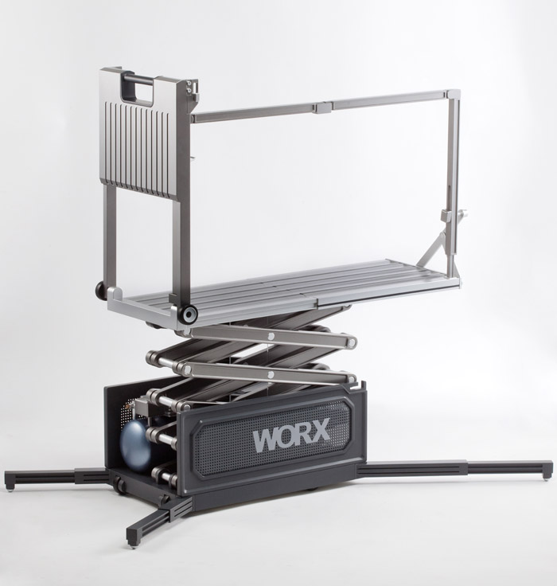
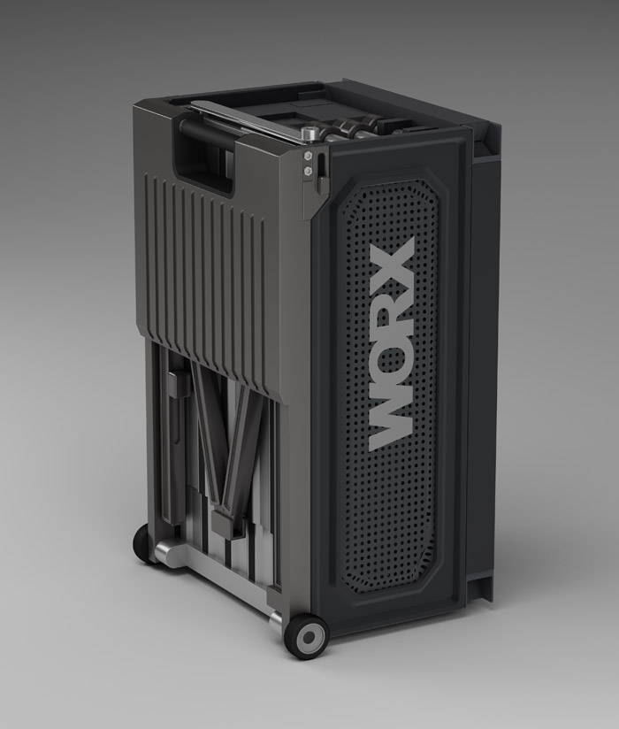
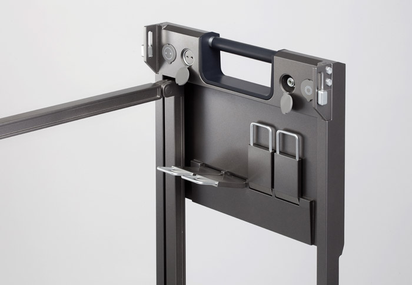
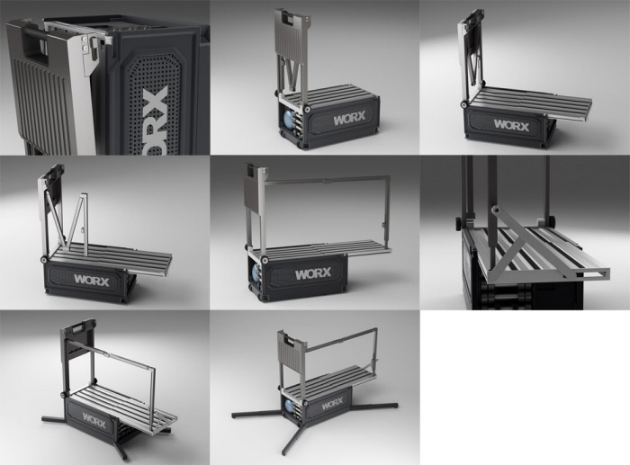

WORX-Lift (Dec 18, 2009)
Year : 2009
Award : Silver, IDEA award 2010
사람들의 삶을 풍요롭게 해주는 디자인을 현실화 시키기 위해서는 그에 맞는 재료와 도구, 공정이 필요하다.
기계화가 이루어진 분야는 미루더라도, 아직까지 사람이 직접 손과 발로 도구를 사용해 디자인을 실제의 것으로 만드는 분야는 많이 남아있다. 인테리어 작업이나 건물 유지보수 작업, 도배작업, 조경작업 등이 그 예이다. 이런 작업 현장에서 흔히 쓰는 사다리, 우마나 작업대 등은 작업현장의 중심 역할을 한다.
그럼에도 불구하고 작업대가 만들어질 때의 역할은 ‘발 받침대’ 정도로밖에 고려되지 않는다. 작업을 할 때 사람들은 작업대 위에 각종 공구나 못, 접착제등과 같은 재료를 올려놓고 작업등을 걸기도 한다. 그리고 전문직으로 하는 사람들이라면 언제나 필요한 도구이지만 그때그때 임시로 만들거나, 분해 조립하는 모듈을 쓴다. 또한 현재의 작업대들은 안전상의 위험에 항상 노출되어있다. 이런 의미에서 작업대가 작업자의 능률을 더 올려주고 안전성을 가지며 현장의 중추역할을 할 수 있도록, 아직까지 디자인이 고려되지 않은 이 영역을 개척해보고자 한다.
In order to realize design which makes people’s lives rich, we need materials, tools and processes which are compliant to it. Although we put away the area which is mechanized, still we have many areas human has to make it with hands and tools. Interior work, building maintenance, wall papering and landscape architecture are the examples. Ladders, scaffolds or work stands are playing an important role in work sites. Nevertheless, the role of the work stands is only considered as ‘Foot stand.’ In this meaning, I would like to pioneer this area where design is not still considered in order to raise efficiency, more safety and make it to play pivotal role in sites.
WORX-lift, by sungi kim from sungi kim on Vimeo.





